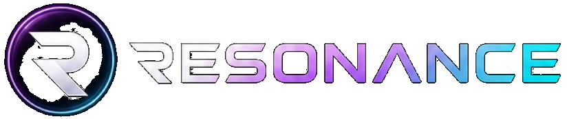
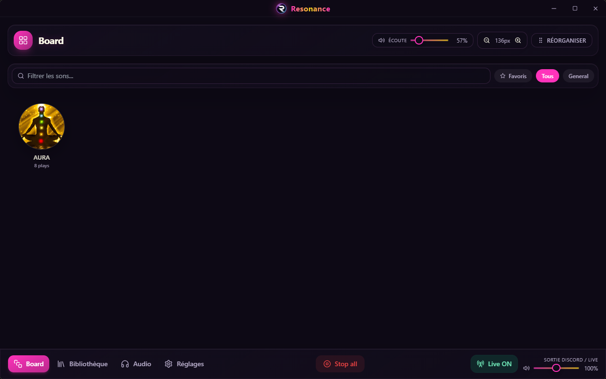
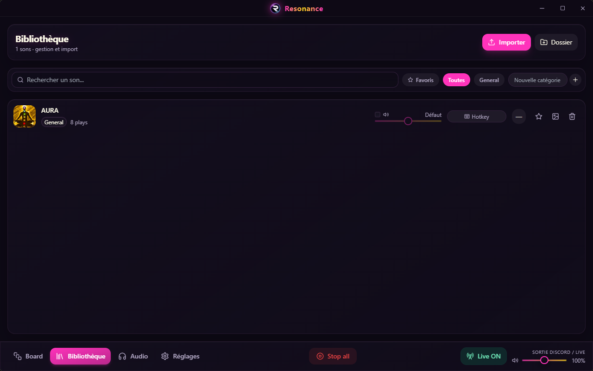

La soundboard qui donne du style à tes streams, tes sessions gaming et tes appels Discord. Pads circulaires, hotkeys globaux, routing audio pro.


Conçu pour les streamers, les gamers et les créateurs de contenu qui veulent du son propre sans prise de tête.
Envoie tes sons vers Discord, OBS ou tout autre logiciel via VB-CABLE. Écoute-toi en même temps sur ton casque avec le monitoring local.
Déclenche tes sons depuis n'importe où, même en plein jeu. Alt+5, Ctrl+F1… tu choisis tes raccourcis.
Pads circulaires, glassmorphism, glows violets et 4 thèmes. Resonance a de la gueule et ça se voit sur stream.
Quand un son joue, ton micro baisse automatiquement dans le flux. Plus de lutte micro vs soundboard.
Tes contacts voient "Joue à Resonance" avec le nom du son en cours. De la pub gratuite et discrète.
Importe par fichier ou dossier, organise par catégories, favoris, volumes individuels, images et emojis.
Comment faire entendre Resonance à tes potes sur Discord, sans que ton micro soit coupé.
Télécharge et installe VB-CABLE Virtual Audio Device. Il crée une sortie audio virtuelle nommée "CABLE Input".
Dans Discord : Paramètres → Voix & vidéo. Mets "Périphérique d'entrée" sur CABLE Output (VB-Audio). Mets ta sortie sur ton casque habituel.
Dans l'onglet Audio de Resonance, choisis CABLE Input comme sortie soundboard. Active Monitoring local pour t'entendre.
Dans les réglages Resonance, active Monitoring local et règle Monitor volume pour t'entendre sur ton casque. Ainsi tu entends tes sons sans les envoyer deux fois sur Discord.
Oui. Resonance est open source et gratuit. Pas de pub, pas d'abonnement. Un bouton Ko-fi est disponible si tu veux soutenir le projet.
VB-CABLE crée un périphérique audio virtuel qui permet d'envoyer le son de Resonance vers Discord sans affecter le reste de ton PC.
Non. Tout reste en local sur ton PC. Seule la Rich Presence Discord communique avec les serveurs Discord pour afficher ton statut.
Bien sûr. Ouvre une issue sur GitHub ou rejoins les discussions.
Télécharge Resonance gratuitement et rejoins les créateurs qui l'utilisent déjà.